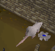
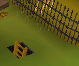
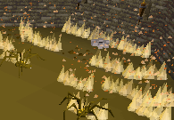

Clock Tower
Description: Help the confused Brother Kojo find the missing cogs and fix his watch tower. Search the dungeon using brawn and brains to correctly place the four cogs.Difficulty: Intermediate
Length: Medium
Items & Skills Needed:
-
or
- Some good armour to get past some level 48 ogres
Reward: 1 Quest point, 500 coins
Instructions:
Talk to Brother Kojo; he should be in the clock tower just southwest of Ardougne Zoo.
You need to get all four cogs. Remember, you can only carry one at a time.
Go down the ladder, and you should be in a dungeon. In the next room, you will see colored blocks on the floor representing the general direction of each cog. Use the colored block to see where to go.
Red Cog:
Go to the colored bricks in the next room and go through the door. The red brick represents southeast.
Go through the door, and you'll reach a room with three level 48 ogres and the red cog.

Go back to the ladder, go up to the 1st floor, and use theRed Cog on the red pole.
White Cog:
Go down the ladder to the dungeon and go to the room with the colored bricks. Now go through the door where the white brick represents northwest.
Continue going northwest to get the rat poison. After you've picked it up, go east to the rat cage.
At the rat cage, you will see two levers to open the two doors. Pull the levers to get into the cage.

Inside the cage, you will see the rats' food trough. Use the rat poison on it, and the rats will eat from it and die. Then the room with the white
cog will open.

Pick up the white cog, go up the ladder, and you will appear outside the clock tower.
Go inside, go up the ladder to the 3rd floor and use theWhite Cog on the white pole.
Blue Cog:
Go down to the dungeon and to the room with the colored bricks. Go through the door where the blue brick represents southwest.
After going in, you'll reach a room with some monsters locked in cages, but unfortunately, the blue cog is locked in as well, with no doors.
So you'll need to find another entrance to the blue cog.

Go up the ladder in the room, and you will appear outside the clock tower. Now go northeast to the wooden cart where Brother Cedric is.
Pick up the bucket south of the wooden cart. Then use the bucket on the adjacent well to obtain a bucket of water.
Climb down the ladder just east of the cart.

After climbing down the ladder, follow the passage to a wall. Go through the door and pick up the blue cog.
Go up the ladder, go inside the clock tower, up the staircase to the 2nd floor and use theBlue Cog on the blue pole.
Black Cog:
Go down to the dungeon and to the room with the colored bricks. Go through the door where the black brick represents northeast. Go down the path to a door. Behind the door, you will see level 2 giant spiders and the black cog surrounded by fires.

Use the bucket of water or wear your ice gloves and pick it up. Now go back to the ladder you came down to the basement with.
In the basement, use theBlack Cog on the black pole.
Now that all of the cogs have been placed, go up the ladder and talk to Brother Kojo to receive your reward.
Congratulations, Quest Complete!

This quest guide was written on RuneHQ by Firkløver. Thanks to patgil2003, Dravan, and wacp for corrections.
This quest guide was entered into the database on Sun, Apr 25, 2004, at 12:58:11 PM by stormer and CJH and was last updated on Fri, Nov 19, 2004, at 09:34:39 PM by MrStormy.